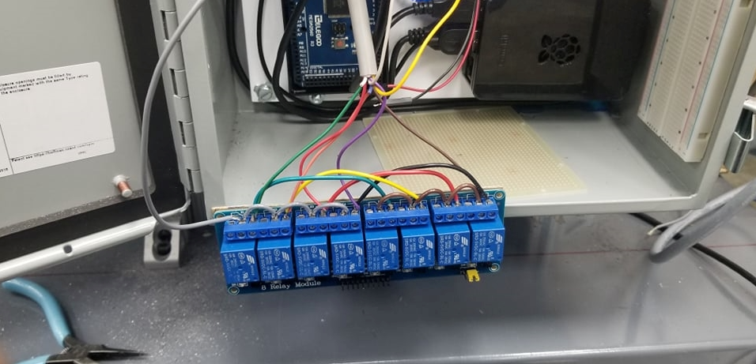

Home
Home
Projects
Resume
LinkedIn
GitHub
Portfolio of Projects
Bandsaw Blade UX Design - LagunaTools
What?
Improve bandsaw guide by reducing time to replace ceramics and bearing
Design a new guide for bandsaw with 30% reduced adjusment time by making it more accessible underneath the table
Develop a prototype the can be tested on the provided bandsaw
How?
Designed 3D CAD models and deatailed 2D engineering drawings using SolidWorks
Fabricated using rapid prototyping methods (3D Printing)
Preformed simulations to display shear stress on ceramics using SolidWorks Simulations and presented updates to LagunaTools weekly
Results?
Assembled a guide with more precise adjusments and allows movement of 5mm
Prototype reduces friction and eliminates sparks
Produced a guide that uses a lead screw thats nut is connected to the side guides powereed by the worm gear which has a self locking mechanism
Automated Rotary Machine - Bal Seal Engineering
What?
Run an automated fixture the can gain data on seal life and validation of seal designs
Reduce manufacturing time by 10% by improving automated rotary fixture

How?
Programmed Arduino Mega to wire emergency system using an 8 channel relay module
Designed in SolidWorks and manufactured a 3D-printed mount for a rotary encoder to track motor going 16000 RPM
Results?
Wired motor system to run at 240 Volts while encoder tracks rotation and digital potentiometer controls the motor speed
Smoke detector, stack light, and emergency stop were able to function
Solids & Liquids Rocket Project - UCI
What?
Designed a multistage rocket in OpenRocket to reach 50,000 ft (15,240 m)
Developed a design that incorporated shock cords, bulkheads, couplers, avionics bay, parachute protectors, black powder
How?
Calculated velocities, pressures, and forces using MATLAB, Desmos, and SolidWorks(CAD & FEA Simulations)
Assembled a flight computer using a Teensy, sensors, and breakout boards programmed in Arduino
Simulated launch with 10mph winds while plotting the Altitude, Velocity and Accerleration
Results?
Achieved the Friends of Amateur Rocketry,Inc. guidelines in our multistage rocket deisgn
Designed a 3D-model in SolidWorks considering various pressures and forces analyzed
Yosemite Balsa Wood Bridge - UCM
What?
Design, analyze, build and test a truss structure model with team of 4
Budget under strict guildlines a balsa wood truss bridge that can withstand at least 100 Newtons of force applied on the deck
How?
Created an AutoCAD blueprint for our Warren truss style bridge model
Used Excel to analyze the tension and compression in each joint
Results?
Assembled a prototype balsa wood bridge model measuring 10(in)x10(in)x7(in)
Withstood 270 Newtons of load on the deck that was tested by adding weights slowly to it